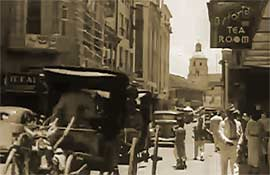

|
j
a v a s c r i p t |
February 22, 1942

Astoria 1930's
Had lunch with a few friends at Schaer's air-conditioned restaurant, the Astoria Swiss Inn. Schaer told us that according to a Japanese secret service member, Filipino snipers have already killed a few soldiers in the city, hence the strict searches in Santa Mesa. Before we went any further, one cautioned us that in case an officer dropped in, we had better think up an alternate topic ahead of time. Apparently one officer cut in once demanding to know what his group was talking about. Placido Mapa today was looking well and cheerful despite the fact he is now an ex-P50,000 a year man. There's talk of making him Minister of the Department of Supply in the present government. "I'll probably have nothing to do," he said, "and get paid all of P1.50 a day too." Quite a number of people who were well off have swallowed their pride in order to scratch-out a living. Carl Ottiger sold some of his food and wine to the Astoria, netting P20 from two transactions for the day's efforts. "Boy," he said, "I have never worked so hard for such an amount." José Feliciano arrived from his farm in Calasiao near the Lingayen Gulf (just south of the Japanese landings). He had been in Manila until January 25, when, with the aid of a statement signed by Vargas, he got a pass to return home. "There was nothing left ... they stole our food, all our clothes ... didn't even leave a pair of shoes ... plus P20,000 of coco crudo that would now be worth P60,000." Before the war, the U.S. Army rented part of his land and placed a large artillery piece there, but the fighting was elsewhere. When the USAFFE warned the civilians that they were retreating to avoid being flanked, the town officials promptly left, as did the police after burying their uniforms. The people took what food and belongings they could carry and moved to the mountains or barrios away from national roads or town centers. The girls went first. Feliciano came to Manila, leaving a trusted 20-year-old to guard the place. "By golly he was brave, that fellow; he stayed." The Japanese came in and ransacked the stores and houses. Feliciano's house was barred and bolted but they broke in anyway, went through every drawer and shelf, took what they wanted, including all the food, and left. Their army was rolling and time was short. Then the real looting started.... By golly it is a black mark in our history. They cleaned out every house and store, not just in my province but in all provinces. It started as if by signal. Whatever the Japs left, they took. In Pangasinan, where the socialists are, it was awful. No one dared resist the armed bands of desperate men. By golly it was terrible! I asked him about the fighting and conditions in the provinces. The small towns like Sison and Pozorrubio are very unhealthy places, stinking from the fires and dead bodies. By golly, there was heavy fighting there and lots of casualties. We punished them severely but they got through to the East, heading for Cabanatuan — flanking, you know? It was their airplanes that did the trick, and their disregard for casualties. The Japs did a poor job of cleaning up — burned some bodies and buried the rest in shallow graves. Hungry dogs soon dug up the corpses and went to work on them with the vultures. Even today, vultures still fly around in large numbers. Japanese shelling destroyed Cabanatuan completely; the Naric [National Rice] bodegas and all the rice inside burned to the ground. (The Japanese claimed the USAFFE burned it before retreating.) So that's why the civilians are still in the mountains. The Japanese maintain a garrison and headquarters up north but they can't guard every town. If they leave too few sentries in one, they start to "disappear." Without the police, local government, or even the Japanese, law and order collapsed. The bandits steal the rice so the Japanese can't get it, and the farmers won't work the fields only to have their grain stolen. No one will cooperate either; "they hate the Japs." There's still plenty of food in the provinces stuck there due to lack of transportation, so José requested a pass to bring down rice from up north. They gave him duplicate copies of a questionnaire to fill out but with a catch: it had to be written in English and Japanese. He couldn't figure out whom to ask to write the Japanese part. When he questioned the regulation he was told to just do it "and not ask questions." |
|
|
|
|